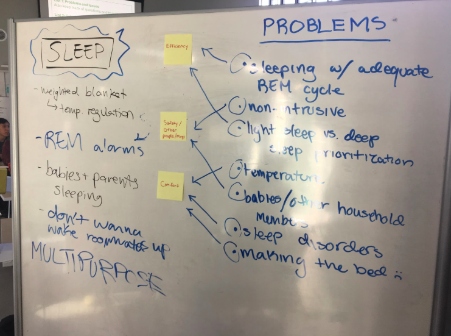
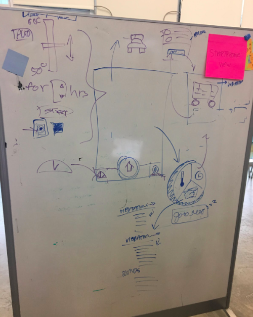
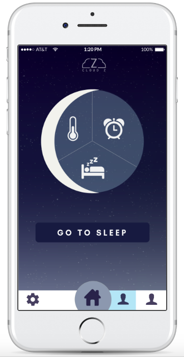
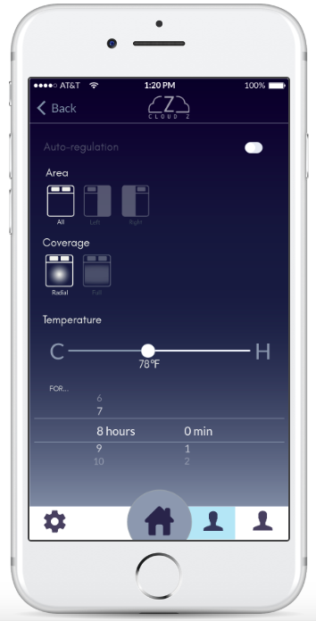
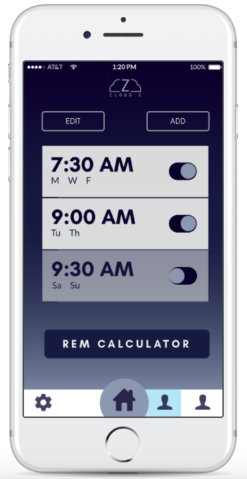
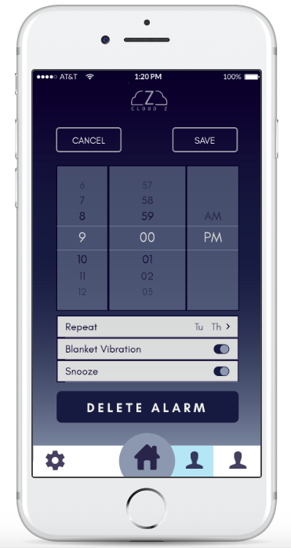

Summary: A "smart-blanket" connected via BlueTooth to a mobile application, with a special focus on anxious sleepers and co-sleepers.
Role: Start-to-end design process, including ideation, product landscaping, and mobile application prototyping
Tools: Adobe Illustrator, MarvelApp
Time: 1 month
Problem: While many tools exist that address sleep issues and conditions, few of them address problems at a holistic, general level. We aimed to create a product that could provide multiple solutions for all kinds of sleepers.
Solution: Cloud Z is a "smart-blanket" that connects to your smartphone via BlueTooth. The Cloud Z blanket contains a grid-like system of wires that, when initiated by the user via a mobile application, can heat the blanket, set vibrating alarms, and more. The Cloud Z blanket is also customizable for single and co-sleepers, allowing partners to select their own preferences for temperature, volume, and weight.
Ideation: We began by addressing various problems encountered in sleep. These problems ranged from commonplace, like loud alarms affecting other sleepers in the area, to chronic, like sleep anxiety. From this list, we created a diverse list of scenarios with different personas and storylines that would meet these problems. In particular, we found the dilemma of co-sleepers (ie. partners in the same bed, roommates, etc.) intriguing because certain problems came up that were unseen in individual sleepers.
We placed these scenarios into three main categories: efficiency, safety/health, and comfort. Using these keywords, we created a branching product landscape of existing tools, including REM sleep calculators, weighted blankets, and temperature-regulated mattresses. We noticed that while a lot of products on the market addressed certain niche groups, there were few that provided holistic solutions for a wide range of sleeping scenarios.
Thus, we decided to design a holistic product with a wide range of functions. We agreed that a blanket seemed the best choice for its customizable qualities (as opposed to a mattress), and that given the large amount of tools and processes we wanted to implement, connecting the blanket via BlueTooth to a mobile application would be more practical than trying to implement it with a remote control system. Furthermore, a mobile application could afford our user a more natural, seamless experience appropriate for the theme of sleep given the prevalence of smartphones.
Implementation: Knowing we would use a simple grid-like system of wires within the physical blanket itself to implement our product's physical needs, we knew that the majority of our design process would be devoted to the user experience with the mobile application. We also acknowledged that sleep was supposed to be an intimate, meditative, and calming activity that could be easily disrupted with jarring changes. With this in mind, we started with initial whiteboard sketches, which enabled multiple team members to contribute to the design effectively, then moved on to prototyping with MarvelApp.
We prioritized intuition over innovation and made a lot of design decisions based on mainstream mobile interfaces. For example, we used the iPhone 6's alarm interface as a foundation for Cloud Z's alarm system and made changes to the existing user interface to accomodate for tools like a REM sleep calculator and a switch between an auditory and a vibrating alarm system. In this way, we focused our design around the theme of sleep and its implications on the user. We decided on a dark screen that would be less jarring to the user at night as well as simple interfaces that required only one hand (ie. buttons, scrolling, etc.), all in an effort to keep the sleep process as uninterrupted as possible.
   Conclusion: We presented our final project at the Jacobs Hall Fall 2017 Design Showcase to students and faculty, including our MarvelApp prototype as well as a model of the wire grid system that would be meshed within the blanket. We were lauded for taking a holistic approach to solving our design problems as well as our MarvelApp prototype.